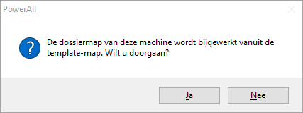

Bij de betreffende administratie moet bij de Windows map DOSSIER de map TEMPLATE eenmalig aangemaakt worden.
Bij het Onderhoud relaties, Artikelen of Machines, tabblad Dossier, is het mogelijk om een dossier automatisch aan te maken d.m.v. de kopieer-knop  .
.
Bij de betreffende administratie moet bij de Windows map DOSSIER de map TEMPLATE eenmalig aangemaakt worden.
Opmerking: Bij Onderhoud administraties moet het dossier pad ingevuld zijn bij Dossier relaties, artikelen en machines, bijv. voor relaties C:\Beversoftware\PW\<A01>\DOSSIER\R\.
Eénmalig moet er een template map TEMPLATE voor Relaties, Artikelen of Machines aangemaakt worden. Om dit te doen doorloopt u de volgende stappen:
Open Windows Verkenner.
Ga naar de hoofdmap van de relatie- artikelen of machinedossier, van de betreffende administratie.
bv C:\Beversoftware\PW\<A01>\DOSSIER\R\
Maak hierin een nieuwe map aan.

Noem deze map TEMPLATE.
In deze map komen de standaard dossier templates te staan.
De standaard template map moet gevuld zijn. Om dit te doen, doorloopt u de volgende stappen:
Open Windows verkenner (Windows toets + R).
Ga naar de map TEMPLATE in Relatie, Artikelen of Machines.
bv C:\Beversoftware\PW\<A01>\DOSSIER\R\
Kopieer de benodigde bestanden of documenten naar deze map.
Al deze bestanden kunnen met één druk op de knop gekopieerd worden naar een (nieuwe) relatie, artikel of machine.
Om de standaard template gegevens te kopiëren, doorloopt u de volgende stappen:
Ga naar:
Ga naar tabblad Dossiers.
Kies voor de knop  (Kopiëren).
(Kopiëren).
Onderstaand scherm verschijnt:

Kies voor de knop Ja.
De template gegevens zijn gekopieerd naar de betreffende dossier map.
Gerelateerde onderwerpen
Copyright ©